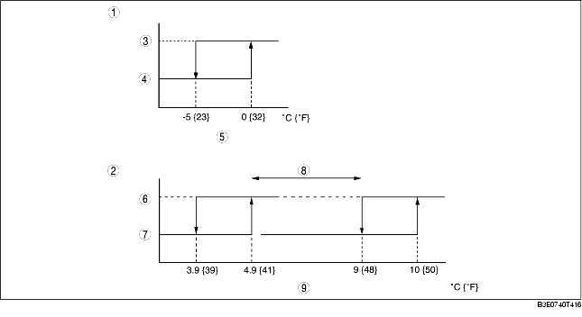

• The climate control unit determines A/C ON/OFF mode based on the ambient temperature.
• In A/C ON mode, the A/C signal (magnetic clutch) is turned on/off according to the temperature of the air passing through the evaporator. The temperature of the air passing through the evaporator at which the A/C signal turns off is determined by the ambient temperature calculation value that is calculated based on the ambient temperature, set temperature, cabin temperature, and sunlight intensity. By setting the A/C signal off temperature low when strong cooling performance is needed, such as when the ambient temperature is high, and setting it high in other conditions, cooling comfort and fuel economy during A/C operation are improved.

.
Defroster correction
• When the DEFROSTER switch is turned on, the system is switched to A/C ON mode and the A/C signal on/off temperature is set to 4.9/3.9 °C {41.0/39.0 °F} to improve defrosting. However, defroster correction is not performed with the ambient temperature correction.
Ambient temperature correction
• When the ambient temperature is -5 °C {23 °F} or less, the system is set to A/C OFF mode to protect the A/C compressor (to prevent A/C compressor fluid from being pressurized). During this operation, manual operation using the A/C switch is not available.
MAX COLD correction
• When the temperature is set to 15.0, the A/C signal on/off temperature is set to 4.9/3.9 °C {41.0/39.0 °F}.
Window fogging prevention correction at start
• The A/C compressor does not turn on due to PCM A/C cut-off control just after the engine is started. Therefore, the windshield and front door glass are easily fogged when the heater is turned on and air blows from the defroster. To prevent this, no A/C signal is output from the climate control unit to the PCM for 6 s after the ignition switch is turned to the ON position. The window fogging prevention correction at start is not performed when the airflow mode is in any mode other than HEAT, HEAT/DEF, and DEFROSTER during airflow volume automatic control.
• A/C ON or OFF mode is selected by operating the A/C switch.
|
A/C mode
|
Operation condition
|
|
|---|---|---|
|
A/C ON mode
|
A/C MODE (A/C display)
|
Fixed in A/C mode.
|
|
A/C OFF mode (No display)
|
Fixed in A/C OFF mode.
|
|
A/C signal ON/OFF determination in A/C mode
.